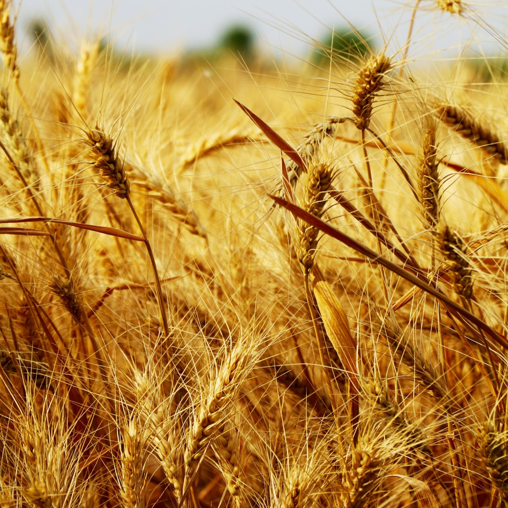

INPUT
Manual Selection
🌾 Crop Selection
CROP IMAGE + BASIC INFO
Wheat
CategoryFood Crop
SeasonRabi
Analyze crop and environmental conditions to recommend when and how much to irrigate.

Live weather and soil moisture are used to calculate the irrigation requirement.
| Date | Crop | Moisture | Recommendation | Water |
|---|